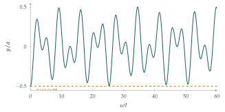

STEP III 2014，第 10 题
继续之前，请先阅读题目（原题为英文）。题目载于 STEP Support Programme 的题目资料库： step.maths.org/questions/14-s3-q10
引子
一个挂在弹簧上的质点，会以简单而规律的方式上下弹动。把两个质点用弹簧连起来，运动看起来就复杂得多：每个质点都不规则地忽动忽停，能量在两者之间来回流转。然而在这复杂的表象背后，藏着两种极其简单的运动，称为简正模态（normal modes）：两个质点或一起同向运动，或恰好反向运动，而每个模态各以自己的频率（frequency）振荡。系统的任何运动，都是这两个模态的组合。
本题要找出夹在三条弹簧之间的两个质点的简正模态，然后证明一个令人惊讶的结论：若系统由静止开始，而其中一个质点有初始位移，则系统永远不会回到起始位置。原因在于两个频率之比是 \(\sqrt3\)，而 \(\sqrt3\) 是无理数（irrational number）。
动笔之前
设 \(X\) 与 \(P\) 的距离为 \(a + x\)，\(Y\) 与 \(Q\) 的距离为 \(a + y\)，那么中间的弹簧 \(XY\) 有多长？当 \(x\) 和 \(y\) 皆为正数时，哪些弹簧被拉长，哪些被压缩？
三段长度之和为 \(3a\)，所以 \(XY = 3a - (a + x) - (a + y) = a - x - y\)。当 \(x, y > 0\) 时，外侧两条弹簧被拉长（伸长量分别为 \(x\) 和 \(y\)），中间一条则被压缩（压缩量为 \(x + y\)）。
逐步解题
阶段 1 运动方程
沿着由 \(P\) 指向 \(Q\) 的方向量度 \(x\)。弹簧 \(PX\) 的伸长量（extension）为 \(x\)，所以它的张力（tension）\(\frac{\lambda x}{a}\) 把 \(X\) 拉回 \(P\) 的方向。弹簧 \(XY\) 的伸长量为 \(-(x + y)\)，所以它的张力 \(-\frac{\lambda(x + y)}{a}\) 把 \(X\) 拉向 \(Y\)（负的张力即是推力）。因此 \[m\ddot x = -\frac{\lambda x}{a} - \frac{\lambda(x + y)}{a} = -\frac{\lambda}{a}(2x + y). \qed\] 根据对称性（把 \(X\) 与 \(Y\)、\(P\) 与 \(Q\) 的角色互换）， \[m\ddot y = -\frac{\lambda}{a}(2y + x).\]
阶段 2 解耦
每条方程都同时涉及 \(x\) 和 \(y\)。把两条方程怎样组合，才会只涉及 \(x\) 和 \(y\) 的某一个组合？
把两式相减及相加，得 \[m(\ddot x - \ddot y) = -\frac{\lambda}{a}(x - y), \qquad m(\ddot x + \ddot y) = -\frac{3\lambda}{a}(x + y).\] 两者都是简谐运动（simple harmonic motion）的方程：\(x - y\) 以 \(\omega^2 = \frac{\lambda}{ma}\) 振荡，而 \(x + y\) 则以 \(3\omega^2\) 振荡。
阶段 3 初始条件
起初 \(XP = a\) 及 \(YQ = \frac12a\)，所以 \(x = 0\) 及 \(y = -\frac12a\)，而且两个质点都处于静止。因此在 \(t = 0\) 时，\(x - y = \frac12a\) 及 \(x + y = -\frac12a\)，而两者的变化率皆为零，由此得 \[x - y = \tfrac12a\cos\omega t, \qquad x + y = -\tfrac12a\cos\sqrt3\,\omega t.\] 所以 \(A = \frac12a\) 及 \(B = 0\)。■
阶段 4 永不返回
把 \(y\) 写成 \(t\) 的函数。若 \(Y\) 要回到起始位置，便须 \(y = -\frac12a\)。这时两个余弦必须各等于甚么？
两式相减，得 \(y = \frac12\bigl((x + y) - (x - y)\bigr) = -\frac14a\bigl(\cos\sqrt3\,\omega t + \cos\omega t\bigr)\)。要 \(y = -\frac12a\)，便需要 \(\cos\sqrt3\,\omega t + \cos\omega t = 2\)；由于每个余弦最大只能是 \(1\)，两者必须都等于 \(1\)： \[\omega t = 2\pi k, \qquad \sqrt3\,\omega t = 2\pi j\] 其中 \(k\) 和 \(j\) 为整数。当 \(t > 0\) 时，\(k \geq 1\)，两式相除得 \(\sqrt3 = \frac jk\)，但 \(\sqrt3\) 是无理数，所以这是不可能的。因此 \(Y\) 永远不会回到起始位置。■

回顾
找出能够解耦的组合。\(x - y\) 和 \(x + y\) 各自满足一条属于自己的方程。
对称性会提示这些组合。把左右两边互换，系统保持不变，所以对称和反对称的组合是很自然的选择。
无理性会带来物理后果。运动之所以不是周期性的，是因为频率之比是无理数。
背后的数学
简正模态就是特征向量
把两条方程写成一条矩阵方程： \[m\begin{pmatrix}\ddot x \\ \ddot y\end{pmatrix} = -\frac{\lambda}{a}\begin{pmatrix}2 & 1 \\ 1 & 2\end{pmatrix}\begin{pmatrix}x \\ y\end{pmatrix}.\] 能够解耦的组合，正是这个矩阵的特征向量（eigenvectors）：\((1, -1)\)，其特征值（eigenvalue）为 \(1\)；以及 \((1, 1)\)，其特征值为 \(3\)（第 7.2 节）。在第一个模态中，\(x = -y\)：两个质点沿直线同向运动（记住 \(x\) 和 \(y\) 是从相反的两端量度的），中间的弹簧长度保持不变。在第二个模态中，\(x = y\)：两个质点反向运动，把中间的弹簧一压一拉，频率因而较高。频率的平方就是特征值乘以 \(\frac{\lambda}{ma}\)。
无论有多少个质点和弹簧，这个方法都适用。一个由 \(N\) 个耦合振子（coupled oscillators）组成的系统有 \(N\) 个简正模态，它们由一个对称矩阵的特征向量给出，而谱定理（spectral theorem）保证这些模态必定存在，并且互相垂直。分子以简正模态振动，化学家正是凭分子所吸收的红外光来辨认它们。建筑物和桥梁也有简正模态，工程师必须令这些模态的频率远离风和地震的频率。当质点的数目趋向无限时，简正模态就变成振动弦线的谐波（harmonics），这正是傅里叶分析（Fourier analysis）的起点。
接近而不到达
虽然 \(Y\) 永远不会刚好返回，但它可以接近到任意程度。原因是克罗内克（Kronecker）的一条定理：若 \(\alpha\) 是无理数，则各倍数 \(\alpha, 2\alpha, 3\alpha, \ldots\) 取模 \(1\) 之后，可以任意接近 \([0, 1]\) 内的每一个数。因此我们可以找到一些时刻，使 \(\omega t\) 是 \(2\pi\) 的倍数，而 \(\sqrt3\,\omega t\) 与另一个这样的倍数之差小于任何指定的容许误差。这种运动是准周期（quasi-periodic）的：它在一个环面（torus）上不断缠绕（每个模态对应一个角），却永远不会闭合。有理与无理频率比之间的这种区别，同样是关于太阳系稳定性的 KAM 定理的核心。
思维技巧
当方程互相耦合时，设法找出各自独立演变的变量组合。在线性问题中，这些组合就是特征向量。
这与 第 10.6 节 中质心和相对坐标的想法如出一辙。到了大学，它就成为对角化（diagonalisation）：选取一组令矩阵成为对角矩阵的基（basis），一组耦合的方程便会分拆成各自独立的方程。
延伸练习
能量。证明总能量 \(\frac12m(\dot x^2 + \dot y^2) + \frac{\lambda}{2a}\bigl(x^2 + y^2 + (x + y)^2\bigr)\) 是常数，并证明它可以分拆成两项之和，每个简正模态各占一项，而每一项本身都是常数。
纯模态。应该怎样让两个质点开始运动，才能使运动是周期性的，且周期为 \(\frac{2\pi}{\omega}\)？若周期为 \(\frac{2\pi}{\sqrt3\,\omega}\) 又如何？
较硬的中间弹簧。若中间弹簧的弹性模量（modulus of elasticity）是 \(\mu\) 而不是 \(\lambda\)，求两个简正模态的频率。当 \(\mu/\lambda\) 取哪些值时，所有运动都是周期性的？
三个质点。三个质量相等的质点排成一线，由四条相同的弹簧连接在两个固定点之间。求对应的矩阵及其特征值（\(2 - \sqrt2\), \(2\), \(2 + \sqrt2\)），并描述三个简正模态。
延伸阅读
A. P. French, Vibrations and Waves（MIT Introductory Physics Series），第 5 章，讲述耦合振子与简正模态。
Gilbert Strang, Introduction to Linear Algebra（Wellesley-Cambridge），关于特征值的一章，当中以弹簧与质点作为主要例子。
Steven Strogatz, Nonlinear Dynamics and Chaos（CRC Press），第 8 章，讲述环面上的准周期运动。